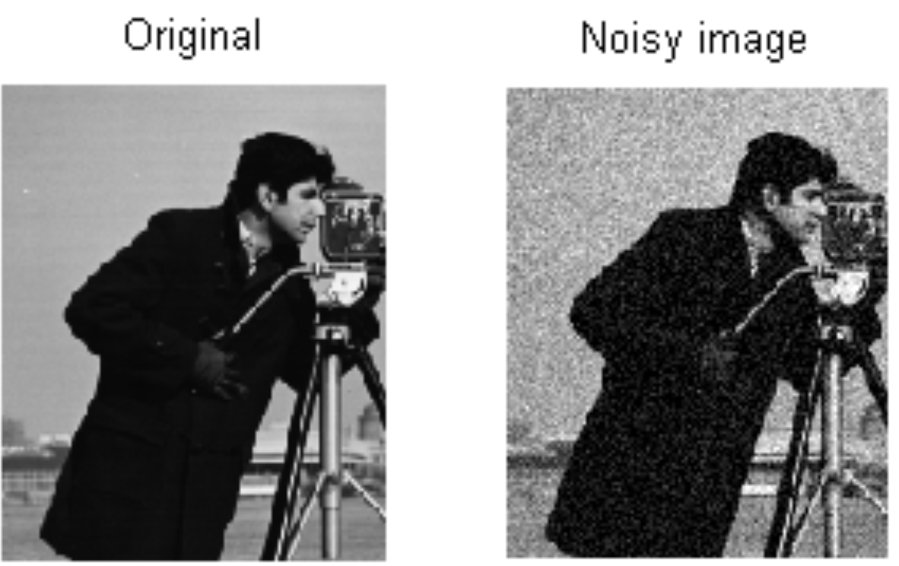
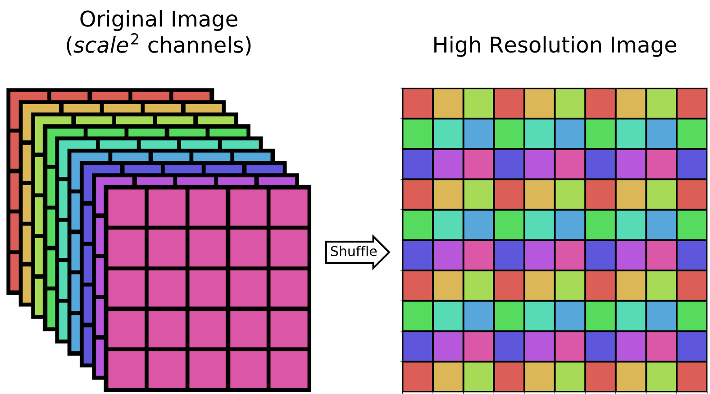
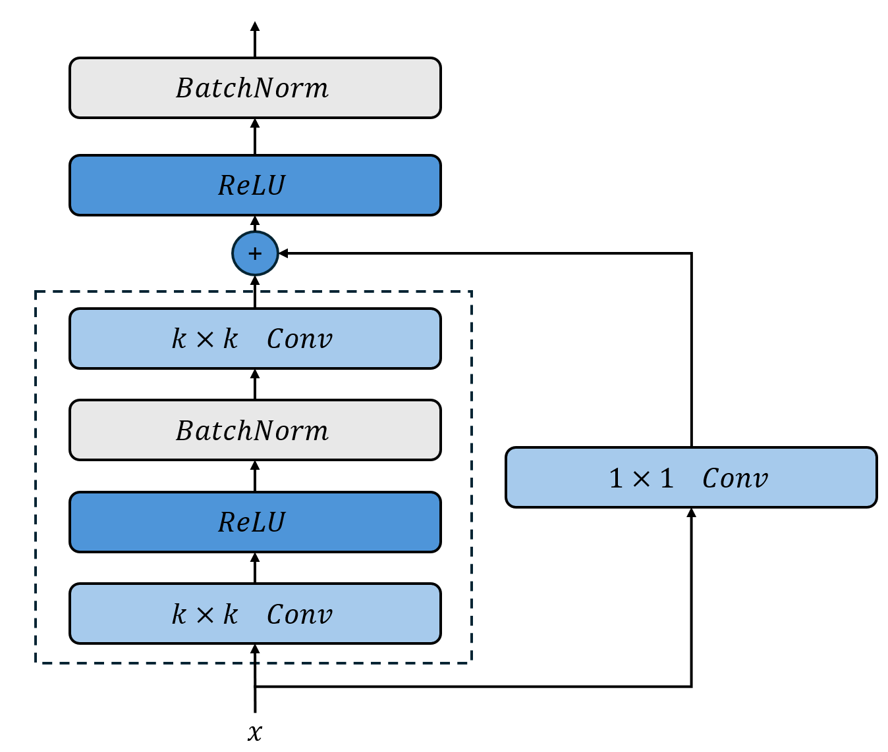
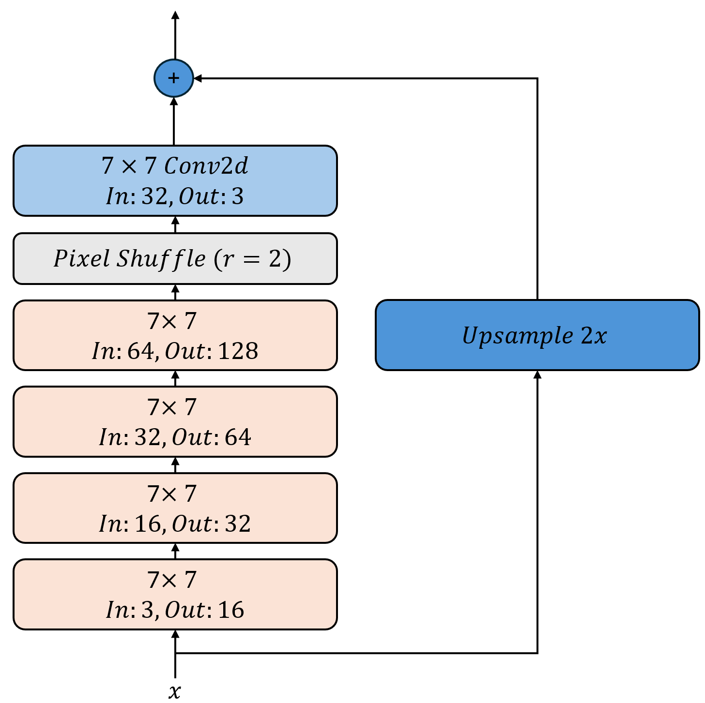
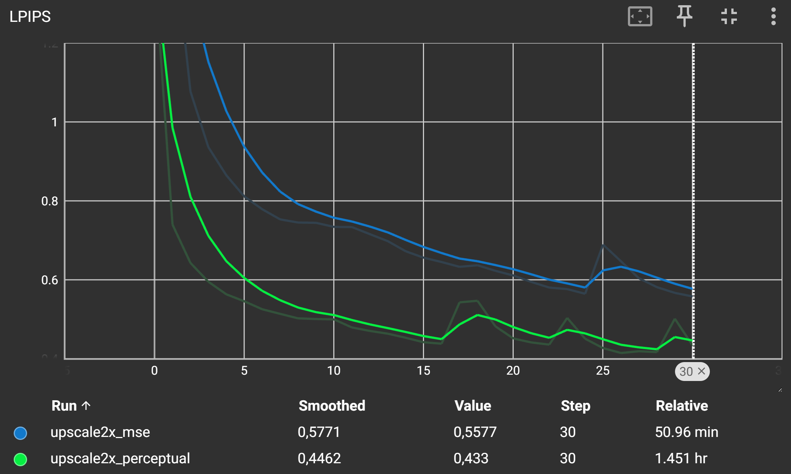
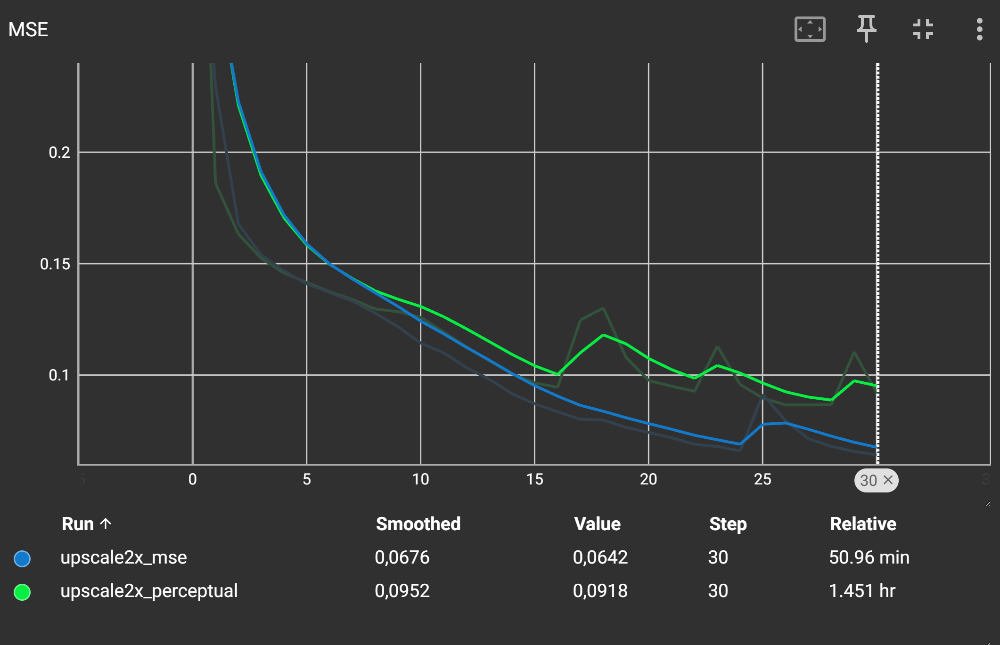
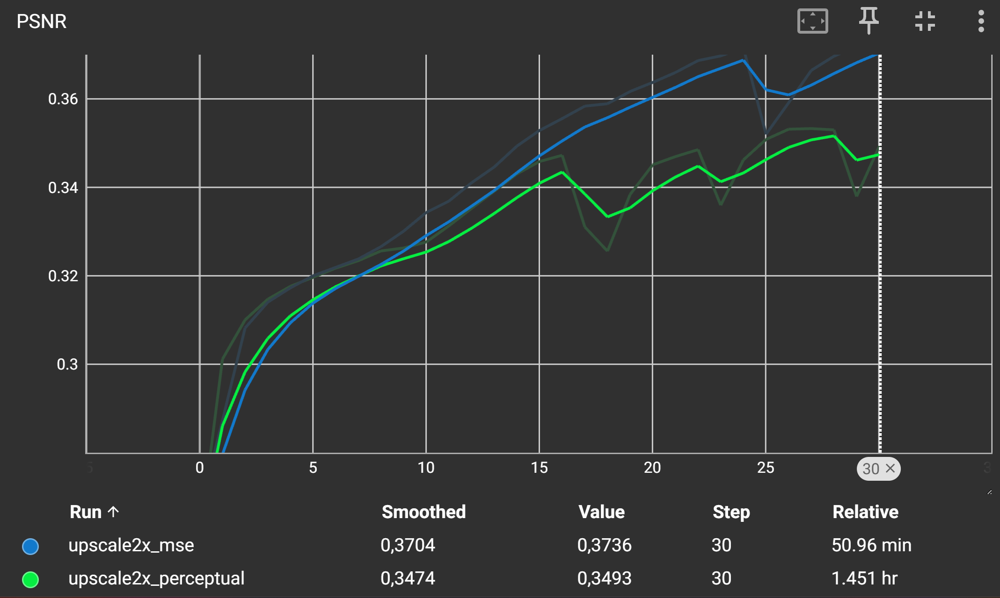
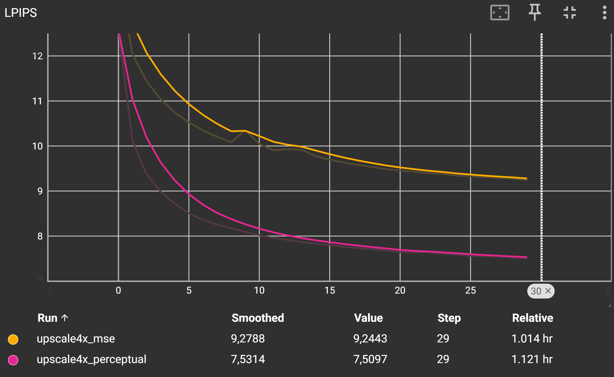
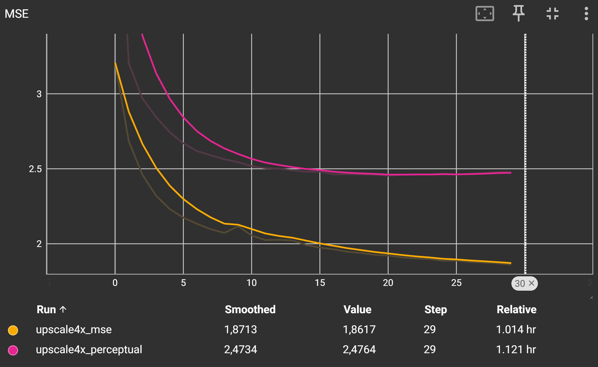
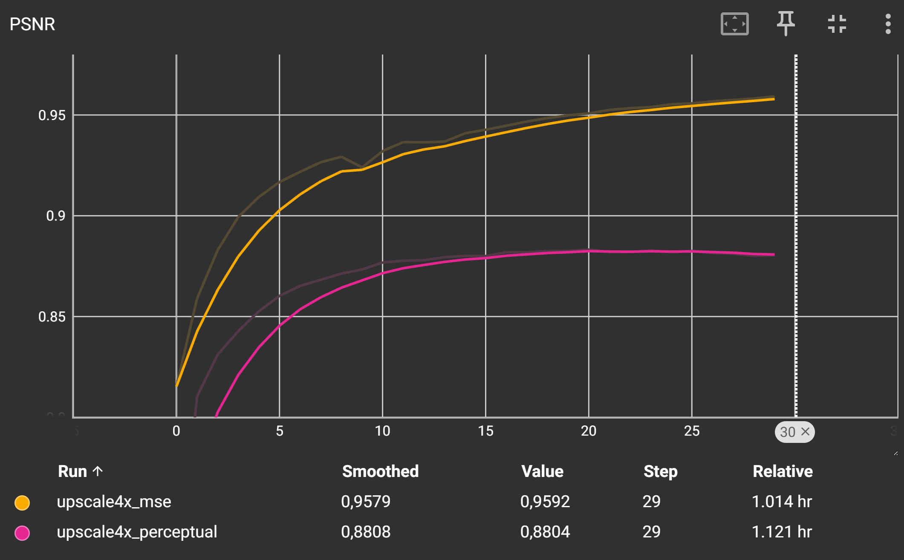

Perceptual Loss
Im Jahr 2016 zeigen Justin Johnson, Alexandre Alahi und Li Fei-Fei in ihrem Paper „Perceptual Losses for Real-Time Style Transfer and Super-Resolution“ die Vorteile von Perceptual Loss für die Bildverarbeitung. Sie verwenden vortrainierte Convolutional Neural Networks (CNNs) wie VGG, um Merkmale aus Bildern zu extrahieren und diese Merkmale als Verlustfunktion zu nutzen. Perceptual Loss misst die Differenz zwischen den extrahierten Merkmalen von zwei Bildern und ermöglicht so eine bessere Wahrnehmung von Bildinhalten im Vergleich zu traditionellen Verlustfunktionen wie dem pixelweisen L1-Verlust (Betragsdifferenz).
VGG16
VGG16 ist ein bekanntes Convolutional Neural Network, das ursprünglich für die Bildklassifikation entwickelt wurde. Es besteht aus 16 Schichten, die Convolutional-Layer, ReLU-Aktivierungen und Max-Pooling-Schichten enthalten. VGG16 wurde auf dem ImageNet-Datensatz trainiert und hat sich als leistungsstark in verschiedenen Computer Vision-Aufgaben erwiesen. In diesem Abschnitt werden wir VGG16 verwenden, um Perceptual Loss zu berechnen.

Das obige Bild zeigt die Architektur von VGG16. Wir werden die Aktivierungen aus den Convolutional-Layern verwenden, um Merkmale zu extrahieren, die dann für die Berechnung des Perceptual Loss verwendet werden.
Perceptual Loss mit VGG16
Der Perceptual Loss vergleicht nicht die Pixelwerte direkt, sondern Merkmale (Features), die durch ein vortrainiertes neuronales Netzwerk (z. B. VGG16) extrahiert werden. Dadurch lässt sich die wahrgenommene Ähnlichkeit zwischen Bildern besser bewerten als mit klassischen Fehlermaßen wie MSE.
Berechnungsschritte
Zwei Bilder werden als Eingabe verwendet: ein generiertes Bild (Output) und das Zielbild (Ground Truth).
Beide Bilder werden durch ein vortrainiertes VGG16-Netzwerk geleitet.
Die Aktivierungen aus einer oder mehreren Zwischenebenen (z. B.
relu2_2oderrelu3_3) werden extrahiert.Der L1-Abstand (Betragsdifferenz) zwischen den entsprechenden Feature-Maps wird berechnet.
Der Durchschnitt dieser Abstände ergibt den Perceptual Loss.
Hinweise zur Implementierung
Das VGG16-Netzwerk wird meist ohne den Klassifikationskopf verwendet (nur bis zu einem bestimmten Layer).
Die Gewichte des VGG-Netzes bleiben eingefroren (nicht trainierbar).
{kind=link}
Die obige Abbildung zeigt den Prozess der Berechnung des Perceptual Loss. Die beiden zu vergleichenden Bilder (\(x\) und \(G(z)\) für Ground Truth und Output) werden durch das VGG16-Netzwerk geleitet. Die Aktivierungen aus den Convolutional-Layern werden extrahiert und der L1-Abstand zwischen den entsprechenden Feature-Maps wird berechnet.
Total Variation Loss
Der Total Variation Loss (TV Loss) ist eine Regularisierungstechnik, die häufig in der Bildverarbeitung eingesetzt wird, um die Glätte und Konsistenz von Bildern zu fördern. Er wird oft in Kombination mit Perceptual Loss verwendet, um die Qualität der generierten Bilder weiter zu verbessern. Der TV Loss misst die Variation der Pixelwerte in einem Bild und bestraft große Änderungen zwischen benachbarten Pixeln. Dies führt zu glatteren Übergängen und reduziert Rauschen in den Bildern. Der TV Loss wird wie folgt berechnet:
Die Summe wird über alle Pixel im Bild gebildet, wobei \(x_{i,j}\) den Pixelwert an der Position \((i,j)\) darstellt. Die obige Formel berechnet die absolute Differenz zwischen benachbarten Pixeln in horizontaler und vertikaler Richtung. Der TV Loss wird oft mit einem Gewicht multipliziert, um seinen Einfluss auf den Gesamtverlust zu steuern.
{kind=link}
Image Upscaling
Die Bildvergrößerung, auch Image Super-Resolution genannt, ist ein zentrales Problem in der Computer Vision. Dabei soll aus einem kleinen, niedrig aufgelösten Bild eine hochaufgelöste Version rekonstruiert werden – z. B. von 64×64 auf 256×256 Pixel. Solche Verfahren sind in vielen Bereichen relevant: von der medizinischen Bildgebung über Überwachungskameras bis hin zur Restaurierung alter Fotos.
Eine der größten Herausforderungen dabei ist, dass die Aufgabe hochgradig unterbestimmt ist: Aus einem kleinen Bild lassen sich unendlich viele „mögliche“ große Bilder rekonstruieren – aber welches ist das richtige?
Klassische Verfahren nutzen meist den MSE (Mean Squared Error) Loss, der versucht, die Pixelwerte des rekonstruierten Bildes möglichst genau an das Original anzupassen. Doch dieser Ansatz hat einen entscheidenden Nachteil: Er neigt zu verwaschenen, detailarmen Bildern, da er im Zweifel lieber „mittelt“, um den Fehler zu minimieren.
Genau hier setzt der Perceptual Loss an.
Statt einzelne Pixel zu vergleichen, bewertet er die visuelle Ähnlichkeit auf Basis von Merkmalen (Features), die ein vortrainiertes neuronales Netzwerk gelernt hat – also so, wie ein Mensch Unterschiede wahrnimmt.
In dieser Aufgabe wollen wir den Unterschied zwischen MSE und Perceptual Loss bei der Bildvergrößerung herausarbeiten und zeigen, wie Perceptual Loss zu deutlich natürlicheren, detailreicheren Ergebnissen führt als klassische pixelbasierte Fehlermaße. Am praktischen Beispiel wird dabei deutlich, dass nicht immer der „niedrigste Fehler“ der menschlich überzeugendste ist – sondern die wahrgenommene Qualität zählt.
LPIPS: Ein Maß für wahrgenommene Bildqualität
Der Learned Perceptual Image Patch Similarity (LPIPS) Score ist ein modernes Fehlermodell zur Bewertung der Ähnlichkeit zwischen zwei Bildern – basierend auf menschlicher Wahrnehmung.
Im Gegensatz zu klassischen Metriken wie PSNR oder MSE vergleicht LPIPS keine einzelnen Pixel, sondern Merkmale (Features), die durch ein vortrainiertes neuronales Netzwerk (z. B. VGG oder SqueezeNet) extrahiert werden. Dadurch kann LPIPS deutlich besser abschätzen, wie „ähnlich“ zwei Bilder für das menschliche Auge wirken.
Der LPIPS-Wert liegt typischerweise zwischen 0 (identisch) und 1 (stark verschieden).
Ein niedriger LPIPS-Score bedeutet also eine hohe visuelle Ähnlichkeit.
Gerade bei Aufgaben wie Bildvergrößerung, Stiltransfer oder GAN-Generierung ist LPIPS ein wertvolles Werkzeug, um die qualitative Leistung von Modellen objektiv zu bewerten – auch wenn klassische Metriken versagen.
PSNR: Klassisches Maß zur Bildqualität
Der Peak Signal-to-Noise Ratio (PSNR) ist ein weit verbreitetes Maß zur Bewertung der Qualität von rekonstruierten Bildern, insbesondere in der Bildkompression oder Super-Resolution. Er quantifiziert den Unterschied zwischen einem Originalbild und dessen rekonstruiertem Gegenstück, basierend auf dem mittleren quadratischen Fehler (MSE).
Berechnet wird PSNR folgendermaßen:
Dabei ist MAX der maximale darstellbare Pixelwert (z. B. 1.0 bei normalisierten Bildern oder 255 bei 8-Bit-Graustufenbildern). Ein höherer PSNR-Wert deutet auf eine geringere Abweichung vom Originalbild hin – und damit auf eine bessere Qualität.
Einschränkungen
Trotz seiner weiten Verbreitung hat PSNR entscheidende Schwächen: Er korreliert nicht gut mit der menschlichen Wahrnehmung. Zwei Bilder mit hohem PSNR können dennoch visuell sehr unterschiedlich wirken, insbesondere bei Texturen oder feinen Details. Deshalb wird PSNR oft durch wahrnehmungsorientierte Metriken wie LPIPS oder SSIM ergänzt.
In dieser Arbeit wird PSNR als Referenzmaß genutzt, um klassische Fehlermaße mit perzeptuell motivierten Alternativen zu vergleichen.
PixelShuffle in PyTorch
Die Klasse torch.nn.PixelShuffle wird in neuronalen Netzen verwendet, um die räumliche Auflösung von Tensoren zu erhöhen. Sie ist besonders nützlich in Super-Resolution-Netzen, bei denen ein niedrig aufgelöstes Bild in ein hochaufgelöstes umgewandelt werden soll.
Funktionsweise
PixelShuffle nimmt einen Eingabetensor der Form (N, C * r^2, H, W) und reorganisiert ihn in einen Tensor der Form (N, C, H * r, W * r), wobei:
N: BatchgrößeC: Anzahl der Kanäle nach dem ShuffleH, W: Höhe und Breiter: Upscale-Faktor
Dabei werden die zusätzlichen Kanäle genutzt, um die räumliche Auflösung zu vergrößern. Intern wird dies durch eine Umordnung (Rearrangement) der Daten erreicht, nicht durch Interpolation.
{kind=link}
Beispiel
import torch
import torch.nn as nn
# Upscale-Faktor
r = 2
pixel_shuffle = nn.PixelShuffle(upscale_factor=r)
# Beispiel-Input: (1, 4, 2, 2) → 4 Kanäle = 1 Kanal × 2^2
input = torch.randn(1, 4, 2, 2)
output = pixel_shuffle(input)
print(output.shape) # Ausgabe: torch.Size([1, 1, 4, 4])
Verwendung
PixelShuffle wird oft in Decoder-Architekturen oder Autoencodern eingesetzt, um räumliche Auflösung effizient zu erhöhen, ohne auf kostenintensive Upsampling-Operationen wie ConvTranspose2d oder Bilinear Upsampling zurückzugreifen.
Aufgabe 1: Perceptual Loss und Total Variation Loss implementieren
In dieser Aufgabe implementieren Sie den Perceptual Loss unter Verwendung des VGG16-Netzwerks sowie den Total Variation Loss.
Sie arbeiten in der Datei perceptualloss/perceptual.py.
Zunächst müssen Sie das VGG16-Netzwerk laden und die erforderlichen Layer extrahieren. Verwenden Sie dazu die torchvision.models-Bibliothek, um das vortrainierte VGG16-Modell zu laden. Wir werden nur bestimmte Layer des VGG16-Netzwerks verwenden, um die Merkmale zu extrahieren,
Das VGG16-Netzwerk ist in PyTorch bereits vortrainiert und kann direkt verwendet werden. Sie können es mit torchvision.models.vgg16(pretrained=True) laden. Eine Liste mit allen Features können Sie mit model.features abrufen.
Deaktiveren Sie die Gradientenberechnung für das VGG16-Netzwerk, da wir es nicht trainieren wollen. Setzen Sie dazu requires_grad auf False für alle Parameter des Modells.
Implementieren Sie nun die Klasse VGG16PerceptualLoss in der Datei perceptualloss/perceptual.py.
- class perceptual.VGG16PerceptualLoss[Quellcode]
Bases:
Module- __init__()[Quellcode]
Initialize the VGG16 perceptual loss model.
It computes the perceptual loss as the mean squared error between the features.
The model is set to evaluation mode and the parameters are frozen.
TODO:
Load the VGG16 model with pretrained weights. Use torchvision.models.vgg16(pretrained=True).
Restrict the VGG16 model to the first 16 layers by using self.vgg = vgg16(pretrained=True).features[:16].
Set the model to evaluation mode using .eval().
Freeze the parameters of the VGG16 model by setting param.requires_grad = False for all parameters. NOTE: Iterate through all parameters by using the self.vgg.parameters()-Iterator.
Initialize the L2 loss function using nn.MSELoss().
- forward(output, target)[Quellcode]
Compute the perceptual loss between two images.
Parameters:
- output (torch.Tensor):
The output image tensor from the upscaler network.
- target (torch.Tensor):
The target image tensor from ground truth.
Returns:
- torch.Tensor:
The computed perceptual loss as the mean squared error between the features of the two images.
TODO:
Resize output and target to 224x224 using torch.nn.functional.interpolate(). Use mode=‘bilinear‘ and align_corners=False.
Pass output through the VGG16 model to get the features f1.
Pass target through the VGG16 model to get the features f2. Note: You should use torch.no_grad() to avoid computing gradients for the target image.
Compute and return the L2 loss between f1 and f2 using self.l2_loss(f1, f2).
Musterlösung für den Konstruktur __init__ anzeigen
class VGG16PerceptualLoss(nn.Module):
def __init__(self):
super(VGG16PerceptualLoss, self).__init__()
self.vgg = vgg16(pretrained=True).features[:16].eval()
for param in self.vgg.parameters():
param.requires_grad = False
self.l1_loss = nn.L1Loss()
Musterlösung für den Forward-Pass anzeigen
def forward(self, output, target):
output = torch.nn.functional.interpolate(output, size=(224, 224), mode='bilinear', align_corners=False)
target = torch.nn.functional.interpolate(target, size=(224, 224), mode='bilinear', align_corners=False)
f1 = self.vgg(output)
with torch.no_grad():
f2 = self.vgg(target)
return self.l1_loss(f1, f2)
Implementieren Sie nun die Klasse TVLoss, ebenfalls in der Datei perceptualloss/perceptual.py.
- class perceptual.TVLoss[Quellcode]
Bases:
Module- __init__()[Quellcode]
Initialize the Total Variation Loss. This loss encourages spatial smoothness in the output image.
- forward(img)[Quellcode]
Compute the Total Variation Loss.
Parameters:
- img (torch.Tensor):
The input image tensor.
Returns:
- torch.Tensor:
The computed Total Variation Loss.
TODO:
Compute the total variation loss as the sum of the absolute differences between adjacent pixels in both dimensions.
Hint: Use torch.mean() to average the differences. Use slicing to access adjacent pixels in the height and width dimensions.Use torch.abs() to compute the absolute differences.
Musterlösung anzeigen
class TVLoss(nn.Module):
def __init__(self):
super(TVLoss, self).__init__()
def forward(self, img):
return (
torch.mean(torch.abs(img[:, :, :-1, :] - img[:, :, 1:, :]))
+ torch.mean(torch.abs(img[:, :, :, :-1] - img[:, :, :, 1:]))
)
Aufgabe 2: Super-Resolution CNN definieren
In dieser Aufgabe implementieren Sie ein einfaches Super-Resolution CNN welches wir später mit dem Perceptual Loss trainieren werden.
Wir verwenden eine Abwandlung der ResNet-Blöcke aus den vorherigen Aufgaben, um ein Super-Resolution-Netzwerk zu erstellen.
Ein einzelner ResNet-Block wird dabei wie folgt aussehen:
{kind=link}
Der ResNet-Block ist bereits implementiert und kann verwendet werden.
- ResNetBlock.__init__(in_channels, out_channels, kernel_size=9, padding=None)[Quellcode]
Initialisiert einen ResNet-Block mit zwei Convolutional-Schichten, Batch-Normalisierung und ReLU-Aktivierung.
Parameters:
- in_channels (int):
Anzahl der Eingabekanäle.
- out_channels (int):
Anzahl der Ausgabekanäle.
- kernel_size (int, optional):
Größe des Convolutional-Kernels. Standard ist 9.
- padding (int, optional):
Padding für die Convolutional-Schichten. Standard ist None. In dem Fall wird das Padding automatisch berechnet, so dass die Ausgabe die gleiche Größe wie die Eingabe hat.
Die Größe der Faltungsmasken ist dabei konstant 7x7 mit einem Padding von 3, so dass die räumliche Dimension der Eingabe gleich bleibt. Die Batch-Normalization-Schichten wurden hinter die nicht-linearität geschoben, um normalisierte Aktivierungen zu erhalten. Die Shortcut-Verbindung passt die Dimension der Eingabe an die des Outputs an.
Wir verwenden vier aufeinanderfolgende ResNet-Blöcke mit zunächst 3 auf 16, dann 16 auf 32, dann 32 auf 64 und schließlich 64 auf 128 Kanäle. Anschließend verwenden wir ein PixelShuffle-Layer mit einem Upscale-Faktor von 2, um die räumliche Auflösung des Bildes zu verdoppeln. Dabei wird die Zahl der Kanäle auf 32 reduziert. Zum Schluß verwenden wir eine klassische Faltung mit einer weiteren 7x7 Maske, welche die 32 Kanäle auf 3 reduziert.
Damit das Netzwerk nicht zunächst die Identitätsfunktion lernen muß addieren wir die mit torch.nn.Upsample hochskalierte Eingabe zum Output des Netzwerks hinzu. Der Faltungsteil muß also nur lernen die Details zu rekonstruieren, die in der hochskalierten Version fehlen. Entsprechend wichtig ist es auch das die letzte Faltung keine nicht-linearität enthält, damit die Addition mit der hochskalierten Eingabe funktioniert.
{kind=link}
Implementieren Sie nun die Klasse SRCNN in der Datei perceptualloss/upscale2x.py, die das Super-Resolution-Netzwerk definiert.
- class upscale2x.Upscale2x[Quellcode]
Bases:
Module- __init__()[Quellcode]
Initialize the Upscale2x model.
This model performs 2x upscaling using a series of ResNet blocks and an upsampling layer.
TODO:
Call the __init__ method of the base class nn.Module.
Define an upsampling layer using nn.Upsample(scale_factor=2, mode=“bilinear“, align_corners=True).
Define a sequential model consisting of:
Four ResNetBlock layers with 3->16, 16->32 and 32->64 and 64->128 channels as well as kernel sizes 7.
A PixelShuffle layer with an upscale factor of 2.
A final convolutional layer with 32 input channels, 3 output channels and kernel size 7 with padding 3.
- forward(x)[Quellcode]
Perform the forward pass of the Upscale2x model.
Parameters:
- x (torch.Tensor):
The input tensor to be upscaled.
Returns:
- torch.Tensor:
The upscaled output tensor.
TODO:
Pass the input tensor through the model.
Also, apply the upsampling layer to the input tensor x.
Add the upsampled tensor to the output of the model.
Musterlösung für den Konstruktur __init__ anzeigen
class Upscale2x(nn.Module):
def __init__(self):
super(Upscale2x, self).__init__()
self.upsample = nn.Upsample(scale_factor=2, mode="bilinear", align_corners=True)
self.model = nn.Sequential(
ResNetBlock(3, 16, kernel_size=7),
ResNetBlock(16, 32, kernel_size=7),
ResNetBlock(32, 64, kernel_size=7),
ResNetBlock(64, 128, kernel_size=7),
nn.PixelShuffle(upscale_factor=2), # First upsample
nn.Conv2d(32, 3, kernel_size=7, padding=3), # Final conv to reduce channels
)
Musterlösung für den Forward-Pass anzeigen
def forward(self, x):
p = self.upsample(x)
x = p + self.model(x)
return x
Aufgabe 3: Super-Resolution mit Perceptual Loss trainieren
Trainieren Sie nun das Super-Resolution-Modell mit dem Perceptual Loss. Sie brauchen nur das Skript perceptualloss/upscale2x.py auszuführen. Öffnen Sie ebenfalls das TensorBoard mit dem Befehl tensorboard –logdir runs um das Training zu überwachen.
Nach nur wenigen Epochen sollten Sie eine deutliche Verbesserung der Bildqualität sehen. In den gezeigten Bildern ist links stets das (hoch-skalierte) Ausgangsbild zu sehen, was an den fehlenden Details sowie dem weichgezeichneten Aussehen zu erkennen ist. Rechts sehen Sie den Ground Truth, also das nicht-skalierte Bild in Orginalauflösung.
Das mittlere Bild zeigt das Ergebnis des Super-Resolution-Netzwerks, welches deutlich mehr Details und Strukturen enthält.
Aufgabe 4: Super-Resolution mit MSE-Loss trainieren
Um den Unterschied zwischen MSE-Loss und Perceptual Loss zu verdeutlichen, trainieren Sie das Super-Resolution-Modell nochmal, diesmal allerdings mit dem MSE-Loss zwischen den hochskalierten und den Ground Truth Bildern.
Passen Sie das die Hauptmethode in der Datei perceptualloss/upscale2x.py an, um den MSE-Loss zu verwenden.
Ihre Trainingskurven sollten ähnlich aussehen wie die folgende:
  {kind=link}
{kind=link}
{kind=link}
Der LPIPS-Score sollte für den Perceptual Loss deutlich niedriger sein als für den MSE-Loss, was auf eine bessere wahrgenommene Bildqualität hinweist während der PSNR-Score und der MSE-Loss höher ist. Dies ist typisch, da der MSE-Loss versucht, die Pixelwerte direkt zu minimieren, während der Perceptual Loss auf die Wahrnehmung des Bildinhalts abzielt.
In den unten stehenden Bildern sehen Sie die Ergebnisse des Trainings. Das ganze linke Bild zeigt das (hochskalierte) Eingabebild in niedriger Auflösung. Daneben finden Sie die Ausgabe des Upscalers, welcher mit MSE-Loss trainiert wurde gefolgt von der Ausgabe des Upscalers, welcher mit Perceptual Loss trainiert wurde. Ganz rechts sehen Sie das Ground Truth Bild in hoher Auflösung.
Achten Sie auf feine Details und Strukturen in den Bildern.
{kind=link}
{kind=link}
{kind=link}
{kind=link}
{kind=link}
{kind=link}
{kind=link}
{kind=link}
{kind=link}
{kind=link}
{kind=link}

{kind=link}
{kind=link}
{kind=link}
{kind=link}
{kind=link}
{kind=link}
{kind=link}
{kind=link}
{kind=link}
{kind=link}
{kind=link}
{kind=link}
{kind=link}
{kind=link}
{kind=link}
{kind=link}
{kind=link}
{kind=link}
{kind=link}
{kind=link}
Aufgabe 5: Super-Resolution x4
Zum Abschluß erweitern Sie das Super-Resolution-Netzwerk, um Bilder von 64x64 auf 256x256 zu skalieren. Arbeiten Sie in der Datei perceptualloss/upscale4x.py und passen Sie die Architektur von vorher an, um die Eingabe von 64x64 auf 256x256 zu skalieren. Sie können dazu die Upscale2x-Klasse als Basis verwenden und diese entsprechend erweitern.
- class upscale4x.Upscale4x[Quellcode]
Bases:
Module- __init__()[Quellcode]
Initialize the Upscale4x model.
This model performs 4x upscaling using a series of ResNet blocks and an upsampling layer.
TODO:
Call the __init__ method of the base class nn.Module.
Define an upsampling layer using nn.Upsample(scale_factor=4, mode=“bilinear“, align_corners=True).
Define a sequential model consisting of:
Five ResNetBlock layers with 3->16, 16->32, 32->64, 64->128 and 128->256 channels as well as kernel sizes 7.
A PixelShuffle layer with an upscale factor of 4.
A final convolutional layer with 16 input channels, 3 output channels and kernel size 5 with padding 2.
- forward(x)[Quellcode]
Perform the forward pass of the Upscale2x model.
Parameters:
- x (torch.Tensor):
The input tensor to be upscaled.
Returns:
- torch.Tensor:
The upscaled output tensor.
TODO:
Pass the input tensor through the model.
Also, apply the upsampling layer to the input tensor x.
Add the upsampled tensor to the output of the model.
Beispiel für einen Upscaler x4 anzeigen
class Upscale4x(nn.Module):
def __init__(self):
super(Upscale4x, self).__init__()
self.upsample = nn.Upsample(scale_factor=4, mode="bilinear", align_corners=True)
self.model = nn.Sequential(
ResNetBlock(3, 16, kernel_size=7),
ResNetBlock(16, 32, kernel_size=7),
ResNetBlock(32, 64, kernel_size=7),
ResNetBlock(64, 128, kernel_size=7),
ResNetBlock(128, 256, kernel_size=7),
nn.PixelShuffle(upscale_factor=4), # First upsample
nn.Conv2d(16, 3, kernel_size=7, padding=3), # Final conv to reduce channels
)
def forward(self, x):
up = self.upsample(x)
x = up + self.model(up)
return x
Trainieren Sie dann ihren Upscaler sowohl mit dem Perceptual Loss als auch mit dem MSE-Loss. Vergleichen Sie wieder.
  {kind=link}
{kind=link}
{kind=link}
Wieder sollte der LPIPS-Score für den Perceptual Loss deutlich niedriger sein als für den MSE-Loss.
{kind=link}
{kind=link}
{kind=link}
{kind=link}
{kind=link}
{kind=link}
{kind=link}
{kind=link}
{kind=link}
{kind=link}
{kind=link}
{kind=link}
{kind=link}

{kind=link}
{kind=link}
{kind=link}
{kind=link}
{kind=link}
{kind=link}
{kind=link}
{kind=link}
{kind=link}
{kind=link}
{kind=link}
{kind=link}
{kind=link}
{kind=link}
{kind=link}
{kind=link}